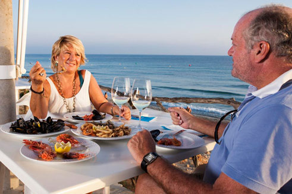
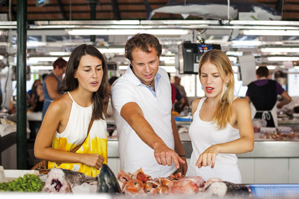

Menorca, ein herrlicher Geschmack
Die Menorquines wissen es, die Gaben der Erde und des Meeres zu nutzen, und sie in einen Gaumenschmaus zu verwandeln. Alle Kulturen, die die Insel besiedelt haben, haben ihre Spur hinterlassen, und diese Vermischung hat die heutige Gastronomie hervorgebracht, einfach aber exquisit.
Da das Meer überall zugegen ist, sind Fische und Meeresfrüchte die besten Zutaten. Sie sind immer frisch zu haben und bieten somit die Grundlage für eine Unzahl von Rezepten, wie zum Beispiel der gefüllte Tintenfisch oder das berühmteste Gericht der Insel, die Langusten-Suppe. Ein Rezept, das als Essen der Fischer begann und heute weltweit die Kategorie einer Delikatesse erreicht hat.
Das Gemüse spielt für die Menorquines als wahre Mittelmeerbewohner eine wichtige Rolle. Was einst ein Essen für Arme war, hat sich heutzutage in Gerichte verwandelt, die von einer Generation an die andere weitergegeben werden und weiterhin beliebt sind. Obwohl das Gemüse zunächst vielleicht eine schlichte Zutat zu sein scheint, eröffnen sich vielfältige Möglichkeiten, gefüllt, gegrillt oder gegart. Vielleicht haben Sie die Gelegenheit, einen Teller “oliaigua“ zu probieren, eine einfache Gemüsesuppe, zu der traditionellerweise Feigen gereicht werden. Der Geschmack des Schlichten.